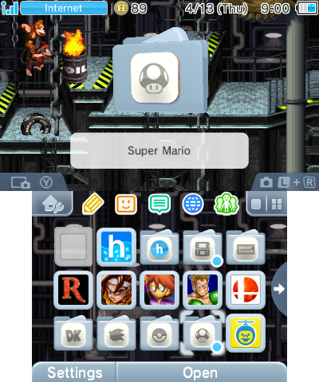

Before you read, there's a few things you should know.
I wanted to start with these right off the bat just to make sure you know. The last thing I want is a confused or unaware customer. You can go and read the rest now. Cheers!
As you may or may not know, the 3DS eShop is shutting down very soon (with heavy restrictions already being placed on purchases). This means most 3DS games will become impossible to obtain, not counting resale physical copies. With a modded 3DS however, this is no longer the case. A modded 3DS can download and install any 3DS game or piece of software for free. If it sounds too good to be true, don't worry. This is completely safe and will not get you in trouble with Nintendo in any way. If there's been a particular game you've been dying to play but haven't been able to find, then you're in luck.
A modded 3DS can run than just 3DS games. Thanks to extra hardware present, a modded 3DS can run games from the DS and GBA natively. Most people already know the 3DS can play DS cartridges, but a modded one can load them from the SD card and run them from the home menu. This is the case for all 3DS models. And that's not even with emulation. With emulation, a modded 3DS can also run games from the GB, GBC, and NES as well as the SNES and PS1 on "New" 3DS consoles. This means that, for example, you could run every single Pokémon game up to Generation 7 on the same 3DS (and transfer between all of them with Pokémon Bank). On my very own New 2DS XL, I have the entire original Crash Bandicoot trilogy, as well as both PaRappa the Rapper and Um Jammer Lammy.
One of the best features of a modded 3DS (for me at least) is the customization. A modded 3DS is able to use custom themes for the home menu, a splash screen on startup, and custom icons to organize folders. Here's a screenshot from the home menu on my own 3DS, themed after Donkey Kong Country.
You can see that it's pretty well organized, and it's easy to tell what every folder is for. It plays custom music as well! I'm willing to make custom themes as a part of the service, but it can take quite a while to make a good quality one (so don't expect me to make them at lightning fast speeds).
There's a lot a modded 3DS can do; It would be impossible to explain everything here. So, here's a lightning round of handy things you can do with your modded 3DS.
I can mod your DSi. However, it is significantly more limited. The DSi can only really play regular DS and GBA games, and not much beyond that. If you do want me to mod your DSi, I'll do it at half price, for 10 bucks.